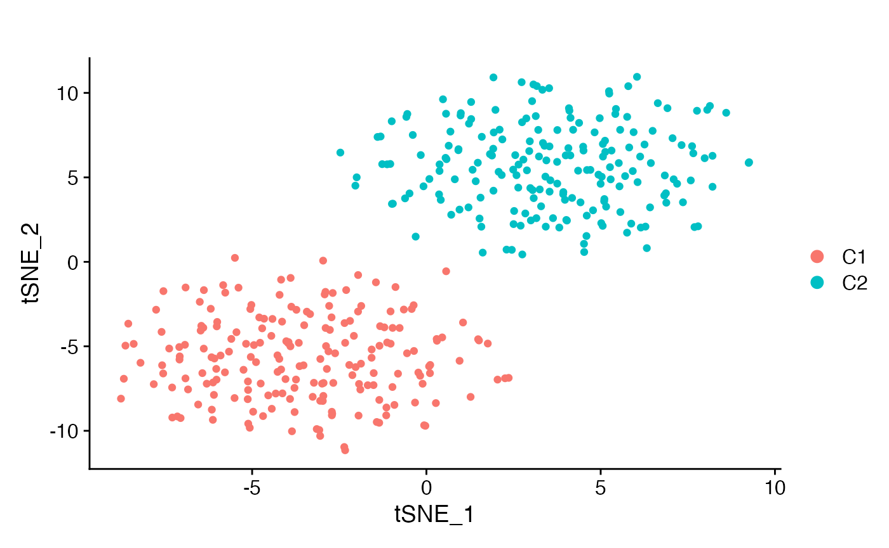
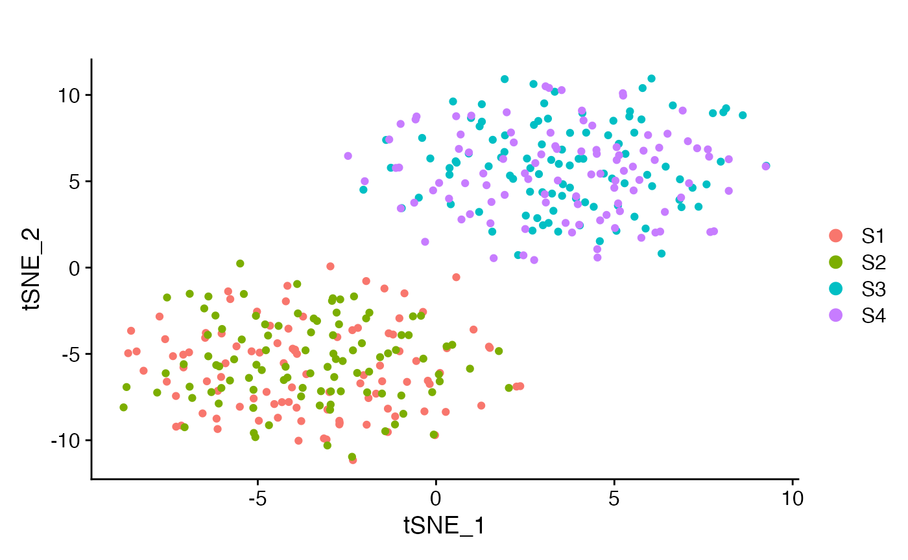
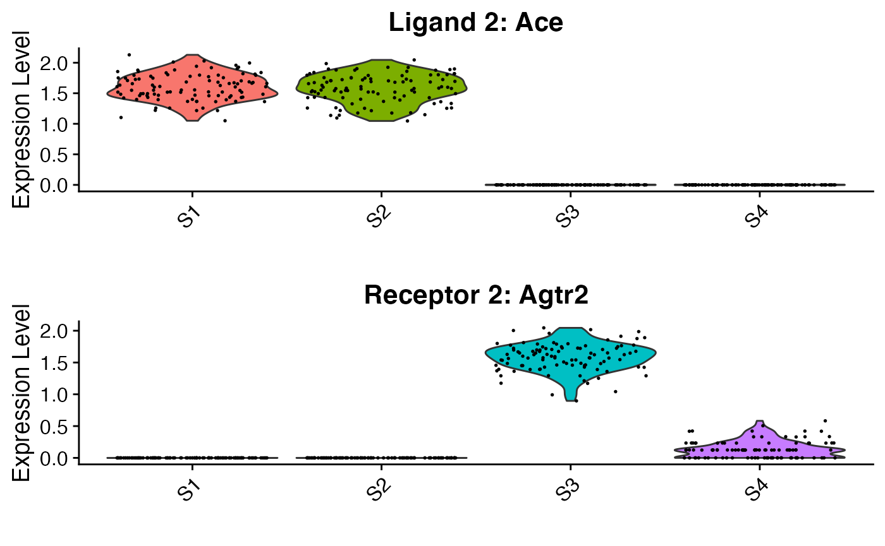
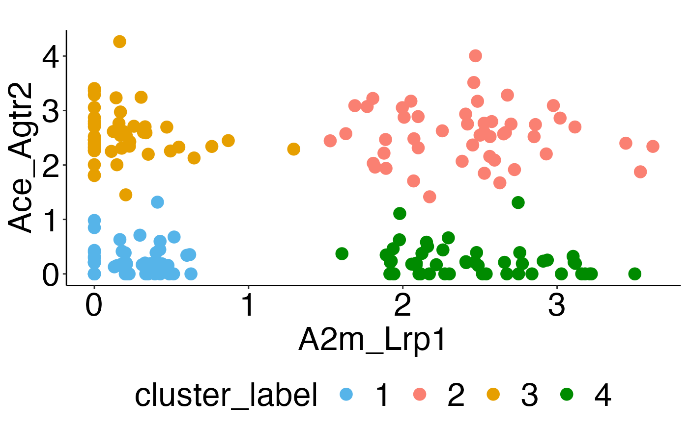
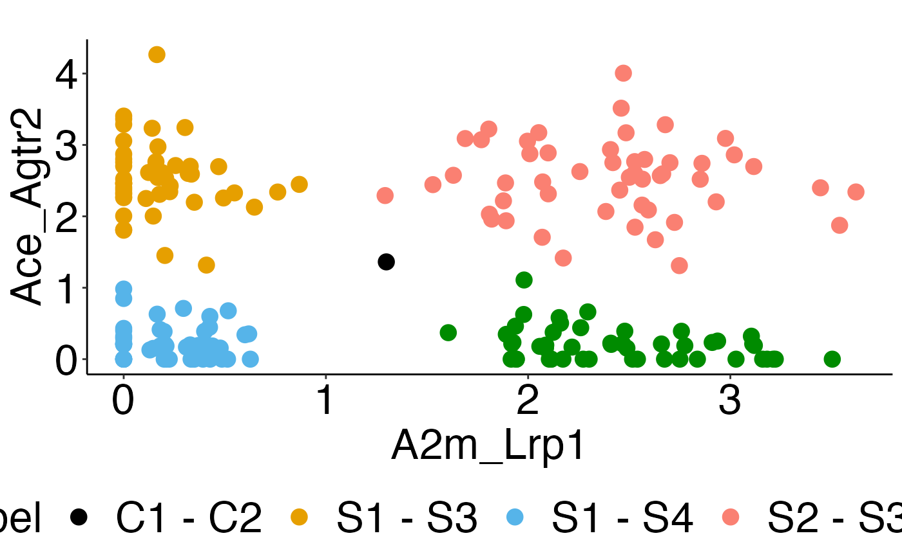

Simulation case 1: Hidden intra-cluster heterogeneity
simulation_example1.RmdIn this simulation example, we designed 2 cell populations where each has hidden subpopulations communicating in distinct ways not captured in gene space.
## Simulation
# for each subpopulation, the number of cells
n_cell_sub <- 100
n_markers <- 50
n_noise <- 5000
set.seed(34)
l1 <- c(rnbinom(n = n_cell_sub,mu=1,size=20),rnbinom(n = n_cell_sub,mu=30,size=20),
rep(0,n_cell_sub*2))
r1 <- c(rep(0,n_cell_sub*2),rnbinom(n = n_cell_sub,mu=30,size=20),rnbinom(n = n_cell_sub,mu=30,size=20))
l2 <- c(rnbinom(n = n_cell_sub,mu=30,size=20),rnbinom(n = n_cell_sub,mu=30,size=20),rep(0,n_cell_sub*2))
r2 <- c(rep(0,n_cell_sub*2),rnbinom(n = n_cell_sub,mu=30,size=20),rnbinom(n = n_cell_sub,mu=1,size=20))
markers <- cbind(matrix(rnbinom(n = n_cell_sub*2*n_markers,mu=10,size=20),nrow = n_markers,ncol = n_cell_sub*2),
matrix(rnbinom(n = n_cell_sub*2*n_markers,mu=20,size=20),nrow = n_markers,ncol = n_cell_sub*2))
noise <- matrix(rnbinom(n = n_cell_sub*4*n_noise,mu=15,size=20),nrow = n_noise,ncol = n_cell_sub*4)
input_mat <- rbind(l1,r1,l2,r2,markers,noise)
rownames(input_mat) <- c("A2m","Lrp1","Ace","Agtr2",paste0("G",1:n_markers),paste0("N",1:n_noise))
colnames(input_mat) <- paste0("Cell",1:(n_cell_sub*4))Note that the echo = FALSE parameter was added to the code chunk to prevent printing of the R code that generated the plot.
# Some further preprocessing
Seurat::Idents(seu_obj_sim1) <- "cell_types_main"
# Normalize the data: scaled by the cell size
seu_obj_sim1 <- Seurat::NormalizeData(seu_obj_sim1)
seu_obj_sim1 <- Seurat::FindVariableFeatures(seu_obj_sim1,selection.method="disp")
seu_obj_sim1 <- Seurat::ScaleData(seu_obj_sim1)
#> Centering and scaling data matrix
seu_obj_sim1 <- Seurat::RunPCA(seu_obj_sim1,npcs =50)
#> PC_ 1
#> Positive: Lrp1, G24, G15, G37, G13, G25, G3, G28, G2, G32
#> G38, G41, G40, G21, G1, G27, G11, G7, G50, G34
#> G17, G12, G9, G16, G44, G33, G45, G43, G46, G48
#> Negative: Ace, A2m, N1008, N2181, N349, N1190, N3332, N4263, N3363, N4864
#> N4370, N3565, N999, N3018, N2578, N375, N896, N1946, N2940, N2411
#> N2771, N2615, N1138, N4651, N3063, N4745, N2577, N784, N594, N3727
#> PC_ 2
#> Positive: N4036, N2364, N2362, N1830, N350, N1767, N3291, N1951, N1083, N4105
#> N863, N3180, N3796, N1887, N285, N3680, N471, N4436, N4450, N904
#> N4185, N4305, N2947, N3007, N4653, N4423, N1245, N849, N739, N973
#> Negative: N2701, N4485, N4496, N2305, N4756, N4087, N4128, N2007, N862, N3602
#> N4101, N291, N1928, N3151, N4114, N75, N3813, N1635, N772, N3443
#> N3546, N4711, N4520, N4829, N3041, N1353, N4210, N4962, N2774, N1038
#> PC_ 3
#> Positive: N2654, N2939, N1118, N2007, N2392, N4516, N1122, N2301, N2080, N169
#> N3374, N1392, N4747, N2914, N3176, N4582, N4215, N172, N243, N2061
#> N2365, N1984, N2575, N3868, N4580, N4604, N3666, N3065, N4057, N1243
#> Negative: N781, N2320, N4415, N38, N3402, N1126, N4848, N655, N1563, N2415
#> N4947, N1116, N2877, N3887, N3550, N2209, N1213, N2981, N2909, N4418
#> N184, N3398, N2022, N133, N3667, N4688, N2045, N1676, N3252, N1289
#> PC_ 4
#> Positive: N3127, N761, N279, N1727, N3344, N3923, N3145, N1356, N3523, N713
#> N577, N2558, N1292, N3630, N3406, N3266, N4603, N2201, N2426, N1665
#> N1593, N3063, N3962, N1895, N3228, N3244, N4350, N1264, N1037, N491
#> Negative: N3751, N3731, N3534, N3272, N3869, N454, N544, N4530, N1948, N1339
#> N2174, N814, N4604, N2413, N1926, N2096, N4059, N1263, N344, N4342
#> N3443, N3568, N3219, N830, N1342, N3018, N190, N2943, N4832, N1945
#> PC_ 5
#> Positive: N2929, N3675, N4128, N1419, N3534, N4701, N1540, N2760, N3844, N4310
#> N4018, N349, N218, N1370, N1276, N2454, N2403, N427, N1749, N3336
#> N3626, N3107, N229, N4466, N1410, N3591, N2800, N4485, N2712, N3356
#> Negative: N4581, N3584, N2932, N372, N2657, N1504, N1311, N4906, N4745, N4704
#> N4802, N2152, N2440, N4427, N1347, N705, N2827, N1982, N2077, N1936
#> N2474, N3882, N3247, N3304, N1926, N1550, N510, N2645, N1321, N1303
seu_obj_sim1 <- Seurat::RunTSNE(seu_obj_sim1,dims=1:30)
Seurat::DimPlot(seu_obj_sim1,reduction = "tsne",group.by = "cell_types_main",pt.size = 1.5)+ggtitle("")
Seurat::DimPlot(seu_obj_sim1,reduction = "tsne",group.by = "cell_types_sub",pt.size = 1.5)+ggtitle("")
p_vln <- Seurat::VlnPlot(seu_obj_sim1,features = c("A2m","Lrp1","Ace","Agtr2"),group.by = "cell_types_sub",slot = "data",ncol = 2,combine = FALSE,pt.size = 0.3)
ggpubr::ggarrange(p_vln[[1]]+NoLegend()+xlab("")+ggtitle("Ligand 1: A2m"),
p_vln[[2]]+NoLegend()+xlab("")+ggtitle("Receptor 1: Lrp1"),
nrow=2)
ggpubr::ggarrange(
p_vln[[3]]+NoLegend()+xlab("")+ggtitle("Ligand 2: Ace"),
p_vln[[4]]+NoLegend()+xlab("")+ggtitle("Receptor 2: Agtr2"),nrow=2)
#############
## RunNICHES ##
#############
sim1 <- NICHES::RunNICHES(object = seu_obj_sim1,LR.database = "fantom5",species = "mouse",assay = "RNA",
meta.data.to.map = c('cell_types_main','cell_types_sub','nCount_RNA'),
CellToCell = T,CellToSystem = F,SystemToCell = F,
CellToCellSpatial =F,CellToNeighborhood = F,NeighborhoodToCell =F)
#>
#> 400 distinct cells from 2 celltypes to be analyzed
#>
#> Limiting ground truth to genes within dataset
#>
#> Mapping against 2 ground truth signaling mechanisms
#>
#> For sampling purposes, please make sure that the active Identity of the input seurat object corresponds to cell types
#>
#> 800 Cell-To-Cell edges computed, sampling 4 distinct VectorTypes, out of 4 total possible
# only take the vector types C1 -> C2
sim1_sub <- subset(sim1[['CellToCell']],idents = "C1-C2")
data_mat_df <- as.data.frame(t(as.matrix(sim1_sub@assays$CellToCell@data)))
data_mat_df$vector_types <- sim1_sub@meta.data$VectorType
data_mat_df$vector_types_sub <- sim1_sub@meta.data$cell_types_sub.Joint
colnames(data_mat_df) <- c("A2m_Lrp1","Ace_Agtr2","vector_types","vector_types_sub")
# k-means clustering
k4 <- kmeans(data_mat_df[,1:2],centers = 4)
data_mat_df$cluster_label <- as.character(k4$cluster)
p_clustering <- ggplot(data_mat_df, aes(x=A2m_Lrp1, y=Ace_Agtr2, color=cluster_label)) +
geom_point(size=4)+
scale_color_manual(values=c("#56B4E9","salmon", "#E69F00","green4"))+
ggtitle("Clustering of the cell-cell vectors") + theme_classic()
p_clustering_adj <- p_clustering +theme(legend.background = element_rect(color = NA),
legend.position = "bottom",
axis.text=element_text(color="black",size=25),
axis.title = element_text(color="black",size=25),
legend.text = element_text(color="black",size=25),
legend.title = element_text(color="black",size=25)) + ggtitle("")
p_clustering_adj
# calculate cellphonedb edge-weights
A2m_mean <- mean(seu_obj_sim1@assays$RNA@data['A2m',seu_obj_sim1@meta.data$cell_types_main == "C1"])
Lrp1_mean <- mean(seu_obj_sim1@assays$RNA@data['Lrp1',seu_obj_sim1@meta.data$cell_types_main == "C2"])
A2m_Lrp1_prod <- A2m_mean*Lrp1_mean
Ace_mean <- mean(seu_obj_sim1@assays$RNA@data['Ace',seu_obj_sim1@meta.data$cell_types_main == "C1"])
Agtr2_mean <- mean(seu_obj_sim1@assays$RNA@data['Agtr2',seu_obj_sim1@meta.data$cell_types_main == "C2"])
Ace_Agtr2_prod <- Ace_mean*Agtr2_mean
cellphdb_df <- as.data.frame(A2m_Lrp1_prod)
rownames(cellphdb_df) <- "all_cells"
colnames(cellphdb_df) <- "A2m_Lrp1"
cellphdb_df$Ace_Agtr2 <- Ace_Agtr2_prod
cellphdb_df$vector_types <- "C1-C2"
cellphdb_df$vector_types_sub <- "C1-C2"
cellphdb_df$cluster_label <- "none"
data_mat_df2 <- rbind(data_mat_df,cellphdb_df)
data_mat_df2$true_label <- c(paste0(data_mat_df$vector_types_sub),"C1 - C2")
p_label <- ggplot(data_mat_df2, aes(x=A2m_Lrp1, y=Ace_Agtr2, color=true_label)) +
geom_point(size=4)+
scale_color_manual(values=c("black", "#E69F00","#56B4E9","salmon","green4"))+
ggtitle("Ground truth interaction profiles")
p_label_adj <- p_label + theme_classic() +theme(legend.background = element_rect(color = NA),
legend.position = "bottom",
axis.text=element_text(color="black",size=25),
axis.title = element_text(color="black",size=25),
legend.text = element_text(color="black",size=25),
legend.title = element_text(color="black",size=25),
) + ggtitle("")
p_label_adj